Detailed Overview of bayesSSM Package
Source:vignettes/articles/detailed-overview.Rmd
detailed-overview.RmdIn this article, we will provide a detailed overview of the
bayesSSM package. It will include some brief theoretical
background and tips on how to use the package effectively.
Theoretical Background
The bayesSSM package is designed to facilitate Bayesian
inference for state space models (SSMs). This package defines a state
space model as in the diagram below (where potential time dependency is
not shown for simplicity):
We wish to perform Bayesian inference in this setting, that is the target distribution is p(x_{0:T}, \theta \mid y_{1:T}) \propto \pi(\theta) \, p(x_{0:T} \mid \theta) \, p(y_{1:T} \mid x_{0:T}, \theta), where \pi(\theta) is the prior distribution of the parameters \theta, p(x_{0:T} \mid \theta) is the distribution of the latent states, and p(y_{1:T} \mid x_{0:T}, \theta) is the distribution of the observations given the latent states and parameters.
Some naive MCMC approaches would be to sample (x_{0:T}, \theta) jointly, but this is often infeasible due to the high dimensionality of the latent states. Another approach would be to marginalize out the latent states and sample the parameters \theta, but this is also often infeasible due to the integral being intractable.
Instead, we use a Particle Markov chain Monte Carlo (PMMH) approach, which samples the latent states and parameters in two steps:
- Sample the latent states x_{0:T} given the parameters \theta and the observations y_{1:T} using a particle filter.
- Sample the parameters \theta given the latent states x_{0:T} and the observations y_{1:T} using a Metropolis-Hastings step.
The key idea is that, since the particle filter provides an unbiased estimate of the likelihood, the PMMH algorithm still targets the correct posterior distribution as its stationary distribution.
To avoid weight degeneracy in the particle filter, it is recommended to use resampling, to focus on the particles with higher weights (with high probability).
Example: Fitting a State Space Model
We will show how to fit a stochastic SIR model using the
bayesSSM package ( see also the stochastic-sir-model
article here
for more details). First, we will generate some synthetic data from the
model.
Simulate data
We will simulate data from the SIR model with the following parameters:
- At t=0 we have S(0) = 90, I(0) = 10 and R(0) = 0.
- Infection rate \lambda=0.5 and removal rate \gamma=0.2.
- We observe the initial state at t=0 complete, and then noisy version of infectious individuals at times t=1, \ldots, 10 representing observations for each day.
We can simulate using the fact that we have two independent exponential distribution, so an event occurs at rate of the sum of the rates.
# --- Simulation settings and true parameters ---
n_total <- 500 # Total population size
init_infected <- 70 # Initially infectious individuals
init_state <- c(n_total - init_infected, init_infected) # (s, i) at time 0
t_max <- 10 # Total number of days to simulate
true_lambda <- 0.5 # True infection parameter
true_gamma <- 0.2 # True removal parameter
# --- Functions for simulating the epidemic ---
epidemic_step <- function(state, lambda, gamma, n_total) {
t <- 0
t_end <- 1
s <- state[1]
i <- state[2]
while (t < t_end && i > 0) {
rate_infection <- (lambda / n_total) * s * i
rate_removal <- gamma * i
rate_total <- rate_infection + rate_removal
if (rate_total <= 0) break
dt <- rexp(1, rate_total)
if (t + dt > t_end) break
t <- t + dt
# Decide which event occurs:
if (runif(1) < rate_infection / rate_total) {
# Infection event
s <- s - 1
i <- i + 1
} else {
# Removal event
i <- i - 1
}
}
c(s, i)
}
simulate_epidemic <- function(
n_total, init_infected, lambda, gamma, t_max) {
states <- matrix(0, nrow = t_max, ncol = 2)
# initial state at t = 0
state <- c(n_total - init_infected, init_infected)
for (t in 1:t_max) {
state <- epidemic_step(state, lambda, gamma, n_total)
states[t, ] <- state
}
states
}Now, we generate some data:
# Simulate an epidemic dataset
true_states <- simulate_epidemic(
n_total, init_infected, true_lambda, true_gamma, t_max
)
latent_i <- true_states[, 2]
observations <- rpois(length(latent_i), lambda = latent_i)
# Display simulated data: time, susceptible, latent infectious, observed counts
print(data.frame(
time = 1:t_max, s = true_states[, 1], i = true_states[, 2], y = observations
))
#> time s i y
#> 1 1 391 88 103
#> 2 2 348 113 106
#> 3 3 307 132 114
#> 4 4 266 147 136
#> 5 5 221 164 155
#> 6 6 183 171 168
#> 7 7 155 159 154
#> 8 8 137 143 137
#> 9 9 118 139 147
#> 10 10 107 121 123And plot it:
# Function to create a tidy dataset for ggplot
prepare_data_for_plot <- function(states, observations, t_max) {
# Organize the data into a tidy format
data <- data.frame(
time = 1:t_max,
s = states[, 1],
i = states[, 2],
y = observations
)
# Convert to long format for ggplot
data_long <- data %>%
gather(key = "state", value = "count", -time)
data_long
}
# Function to plot the epidemic data
plot_epidemic_data <- function(data_long, t_max) {
ggplot(data_long, aes(x = time, y = count, color = state)) +
geom_line(linewidth = 1.2) +
scale_color_manual(values = c("s" = "blue", "i" = "red", "y" = "green")) +
labs(
x = "Time (Days)", y = "Count",
title = "Susceptible, Infected, and Observed Counts"
) +
theme_minimal() +
theme(legend.title = element_blank()) +
scale_x_continuous(breaks = 1:t_max) +
theme(
axis.title = element_text(size = 12),
plot.title = element_text(size = 14, hjust = 0.5)
)
}
# Prepare data for plotting
data_long <- prepare_data_for_plot(true_states, observations, t_max)
# Plot the results
plot_epidemic_data(data_long, t_max)
Fitting the model
We define the initialization, transition, and log-likelihood functions for the SIR model. Note, that we define all variables used in the functions inside the functions, so that they can be used in parallel processing (see also the tips and tricks section below).
The initialization function init_fn must take the
argument num_particles and return a matrix of particles,
where each row corresponds to a particle’s initial state (susceptible
and infected individuals). In this example we use a deterministic
initialization with a fixed number of susceptible and infected
individuals. The transition function transition_fn must
take the argument particles and return a matrix of
particles, where each row corresponds to a particle’s state at the next
time step. The log-likelihood function log_likelihood_fn
must take the arguments y and particles, and
return a vector of log-likelihood values for each particle.
Any time dependency can be implemented by giving a t
argument in the transition_fn and
log_likelihood_fn. In this example, we do not have time
dependency, so we do not use the t argument.
init_fn_epidemic <- function(num_particles) {
# Return a matrix with num_particles rows
# each row is the initial state (s, i)
n_total <- 500
init_infected <- 70
init_state <- c(S = n_total - init_infected, I = init_infected)
matrix(
rep(init_state, each = num_particles),
nrow = num_particles,
byrow = FALSE
)
}
transition_fn_epidemic <- function(particles, lambda, gamma, t) {
n_total <- 500
epidemic_step <- function(state, lambda, gamma, n_total) {
t <- 0
t_end <- 1
s <- state[1]
i <- state[2]
while (t < t_end && i > 0) {
rate_infection <- (lambda / n_total) * s * i
rate_removal <- gamma * i
rate_total <- rate_infection + rate_removal
if (rate_total <= 0) break
dt <- rexp(1, rate_total)
if (t + dt > t_end) break
t <- t + dt
# Decide which event occurs:
if (runif(1) < rate_infection / rate_total) {
# Infection event
s <- s - 1
i <- i + 1
} else {
# Removal event
i <- i - 1
}
}
c(s, i)
}
new_particles <- t(apply(particles, 1, function(state) {
s <- state[1]
i <- state[2]
if (i == 0) {
return(c(s, i))
}
epidemic_step(state, lambda, gamma, n_total)
}))
new_particles
}
log_likelihood_fn_epidemic <- function(y, particles, t) {
# particles is expected to be a matrix with columns (s, i)
dpois(y, lambda = particles[, 2], log = TRUE)
}With priors for \lambda, \gamma as \begin{align*} \lambda &\sim \operatorname{Normal^+}(0, 1^2), \\ \gamma &\sim \operatorname{Normal^+}(0, 2^2). \end{align*}
log_prior_lambda <- function(lambda) {
extraDistr::dhnorm(lambda, sigma = 1, log = TRUE)
}
log_prior_gamma <- function(gamma) {
extraDistr::dhnorm(gamma, sigma = 2, log = TRUE)
}
log_priors <- list(
lambda = log_prior_lambda,
gamma = log_prior_gamma
)Now we can run the PMMH algorithm to estimate the posterior distribution (we modify the tuning and only draw 1000 samples to speed it up).
result <- pmmh(
y = observations,
m = 1000,
init_fn = init_fn_epidemic,
transition_fn = transition_fn_epidemic,
log_likelihood_fn = log_likelihood_fn_epidemic,
log_priors = log_priors,
pilot_init_params = list(
c(lambda = 0.5, gamma = 0.5),
c(lambda = 1, gamma = 1)
),
burn_in = 200,
num_chains = 2,
tune_control = default_tune_control(pilot_m = 100, pilot_burn_in = 10),
verbose = TRUE,
seed = 1405
)
#> Running chain 1...
#> Running pilot chain for tuning...
#> Pilot chain posterior mean:
#> lambda gamma
#> 0.4884500 0.1862124
#> Pilot chain posterior covariance:
#> lambda gamma
#> lambda 0.004595206 0.0011484070
#> gamma 0.001148407 0.0003359767
#> Using 50 particles for PMMH:
#> Running Particle MCMC chain with tuned settings...
#> Running chain 2...
#> Running pilot chain for tuning...
#> Pilot chain posterior mean:
#> lambda gamma
#> 0.6228020 0.2469006
#> Pilot chain posterior covariance:
#> lambda gamma
#> lambda 0.0045776235 -0.0002264161
#> gamma -0.0002264161 0.0024275942
#> Using 50 particles for PMMH:
#> Running Particle MCMC chain with tuned settings...
#> PMMH Results Summary:
#> Parameter Mean SD Median 2.5% 97.5% ESS Rhat
#> lambda 0.54 0.08 0.54 0.41 0.69 60 1.036
#> gamma 0.20 0.02 0.21 0.15 0.24 70 1.039
#> Warning in pmmh(y = observations, m = 1000, init_fn = init_fn_epidemic, : Some
#> ESS values are below 400, indicating poor mixing. Consider running the chains
#> for more iterations.
#> Warning in pmmh(y = observations, m = 1000, init_fn = init_fn_epidemic, :
#> Some Rhat values are above 1.01, indicating that the chains have not converged.
#> Consider running the chains for more iterations and/or increase burn_in.Tips and Tricks
Using Several Cores
To use several cores (up to the number of chains), you can set the
num_cores argument in the pmmh function. The
code below will run the PMMH algorithm using 2 cores, which is useful
for speeding up the sampling process, especially for larger datasets or
more complex models.
Note, that all global variables must be explicitly defined within the
functions that are exported to the worker processes. I.e, the
n_total, init_infected, and
init_state variables must be defined within the
init_fn_epidemic, transition_fn_epidemic, and
log_likelihood_fn_epidemic functions, as shown above.
result <- pmmh(
y = observations,
m = 1000,
init_fn = init_fn_epidemic,
transition_fn = transition_fn_epidemic,
log_likelihood_fn = log_likelihood_fn_epidemic,
log_priors = log_priors,
pilot_init_params = list(
c(lambda = 0.5, gamma = 0.5),
c(lambda = 1, gamma = 1)
),
burn_in = 200,
num_chains = 2,
tune_control = default_tune_control(pilot_m = 100, pilot_burn_in = 10),
verbose = TRUE,
seed = 1405,
num_cores = 2
)Sampling on an Unconstrained Space
To allow for more efficient sampling, we can use the
param_transform argument to propose new parameters on an
unconstrained space, leading to more efficient sampling. Since \lambda and \gamma both take values in (0, \infty), we can use the log
transformation.
result <- pmmh(
y = observations,
m = 1000,
init_fn = init_fn_epidemic,
transition_fn = transition_fn_epidemic,
log_likelihood_fn = log_likelihood_fn_epidemic,
log_priors = log_priors,
pilot_init_params = list(
c(lambda = 0.5, gamma = 0.5),
c(lambda = 1, gamma = 1)
),
burn_in = 200,
num_chains = 2,
tune_control = default_tune_control(pilot_m = 100, pilot_burn_in = 10),
verbose = TRUE,
seed = 1405,
param_transform = list(lambda = "log", gamma = "log")
)Using Rcpp
If the transition and log-likelihood functions are computationally expensive, you can speed up the sampling process by using Rcpp to implement the functions in C++. Here is an example of how to do this for the transition function of the SIR model.
cppFunction("
NumericMatrix transition_fn_epidemic_cpp(
NumericMatrix particles,
double lambda,
double gamma
) {
int n_particles = particles.nrow();
int n_total = 500;
double t_end = 1.0; // Time step for the transition
NumericMatrix new_particles(n_particles, 2);
for (int p = 0; p < n_particles; p++) {
int s = particles(p, 0);
int i = particles(p, 1);
if (i == 0) {
new_particles(p, 0) = s;
new_particles(p, 1) = i;
continue;
}
double t = 0.0;
while (t < t_end && i > 0) {
double rate_infection = (lambda / n_total) * s * i;
double rate_removal = gamma * i;
double rate_total = rate_infection + rate_removal;
if (rate_total <= 0.0) {
break;
}
double dt = R::rexp(1.0 / rate_total);
if (t + dt > t_end) {
break;
}
t += dt;
if (R::runif(0.0, 1.0) < (rate_infection / rate_total)) {
// Infection event
s -= 1;
i += 1;
} else {
// Removal event
i -= 1;
}
}
new_particles(p, 0) = s;
new_particles(p, 1) = i;
}
return new_particles;
}
")This C++ implementation is much faster than the R implementation, which will speed up the PMMH sampling process significantly, especially for larger datasets or more complex models.
Now, we can use this C++ function in the pmmh function
by passing it as the transition_fn argument.
result_cpp <- pmmh(
y = observations,
m = 1000,
init_fn = init_fn_epidemic,
transition_fn = transition_fn_epidemic_cpp,
log_likelihood_fn = log_likelihood_fn_epidemic,
log_priors = log_priors,
pilot_init_params = list(
c(lambda = 0.5, gamma = 0.5),
c(lambda = 1, gamma = 1)
),
burn_in = 200,
num_chains = 2,
tune_control = default_tune_control(pilot_m = 100, pilot_burn_in = 10),
verbose = TRUE,
seed = 1405,
param_transform = list(lambda = "log", gamma = "log")
)
#> Running chain 1...
#> Running pilot chain for tuning...
#> Pilot chain posterior mean:
#> lambda gamma
#> 0.5744942 0.2023182
#> Pilot chain posterior covariance (on transformed space):
#> lambda gamma
#> lambda 0.0049477745 0.0008807493
#> gamma 0.0008807493 0.0001576646
#> Using 50 particles for PMMH:
#> Running Particle MCMC chain with tuned settings...
#> Running chain 2...
#> Running pilot chain for tuning...
#> Pilot chain posterior mean:
#> lambda gamma
#> 0.5228747 0.1919012
#> Pilot chain posterior covariance (on transformed space):
#> lambda gamma
#> lambda 0.0018259219 0.0005323758
#> gamma 0.0005323758 0.0001830201
#> Using 50 particles for PMMH:
#> Running Particle MCMC chain with tuned settings...
#> PMMH Results Summary:
#> Parameter Mean SD Median 2.5% 97.5% ESS Rhat
#> lambda 0.57 0.07 0.56 0.42 0.72 109 1.012
#> gamma 0.21 0.02 0.21 0.17 0.24 70 1.020
#> Warning in pmmh(y = observations, m = 1000, init_fn = init_fn_epidemic, : Some
#> ESS values are below 400, indicating poor mixing. Consider running the chains
#> for more iterations.
#> Warning in pmmh(y = observations, m = 1000, init_fn = init_fn_epidemic, :
#> Some Rhat values are above 1.01, indicating that the chains have not converged.
#> Consider running the chains for more iterations and/or increase burn_in.Observation Times
The bayesSSM package allows you to specify the
observation times for the observations. This is useful if the
observations are not equally spaced in time. You can specify the
observation times using the obs_times argument in the
pmmh function. The observation times should be a vector of
the same length as the observations, and it should contain the time
points at which the observations were made.
Here is an example of how to use the obs_times argument,
where we assume that the observations were made at times 1, 2, 3 and
6.
obs_times <- c(1, 2, 3, 6)
new_observations <- observations[obs_times]
result_obs_times <- pmmh(
y = new_observations,
m = 1000,
init_fn = init_fn_epidemic,
transition_fn = transition_fn_epidemic,
log_likelihood_fn = log_likelihood_fn_epidemic,
log_priors = log_priors,
pilot_init_params = list(
c(lambda = 0.5, gamma = 0.5),
c(lambda = 1, gamma = 1)
),
burn_in = 200,
num_chains = 2,
tune_control = default_tune_control(pilot_m = 100, pilot_burn_in = 10),
verbose = TRUE,
seed = 1405,
param_transform = list(lambda = "log", gamma = "log"),
obs_times = obs_times
)Specifying Prior on a Different Scale
Sometimes, it is useful to specify the prior on a different scale than the parameter space. For instance, it is common to specify the prior for the over-dispersion parameter \phi in a negative binomial model on a different scale, such as \frac{1}{\sqrt{\phi}} \sim \operatorname{Normal^+}(0, 1), where \operatorname{Normal^+}(0, 1) is a truncated normal distribution on the positive real line. To do this, you need to add the log_jacobian of the transformation in the specified log-prior function. This is shown in the following function, which implements the prior for \phi on the scale of \frac{1}{\sqrt{\phi}}.
Conclusion
In this article, we have provided a detailed overview of the
bayesSSM package and how to use it for Bayesian inference
in state space models. We have shown how to define the model, simulate
data, and fit the model using the PMMH algorithm. We also provided some
tips and tricks for using the package effectively, including how to use
several cores, sample on an unconstrained space, and use Rcpp for faster
sampling.